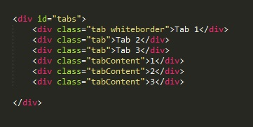
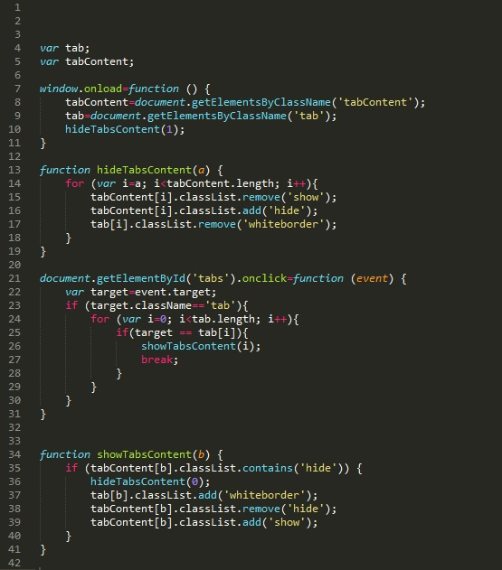

Результат
Разбор
Рассмотрим сначала код HTML
Здесь все просто. У нас есть блок div (id="tabs), в котором шесть блоков (три блока class="tab и три блока с class="tabContent). Важно отметить то, что у первого подблока указано два класса (tab и whiteborde), с помощью этого класса мы и будем делать магию отображения блоков. С помощью кода javaScript мы будем присваивать этот класс тому блоку по которому будет будет совершон клик. Теперь приступим к рассмотру кода CSS
#tabs .tab всем элементам с классом .tab которые находятся в элементе с id=tabs
#tabs .whiteborder всем элементам с классом .whiteborder которые находятся в элементе с id=tabs
#tabs .tabContent всем элементам с классом .tabContent которые находятся в элементе с id=tabs
Что касается оставшихся двух частей кода, здесь все просто одна часть скрывает блок а вторая его показывает. С помощью кода JavaScript мы будем добавлять элементам класс hide или show
Рассмотрим код JavaScript
СТР 4-5 - на этом участке мы объявляем две глобальные переменные.
СТР 7-11 - здесь мы на событие window.onload (загрузка окна) запускаем функцию, в которой нашим глобальным переменным присваиваются значения классов tabContent и tab. Так же запускаем функцию hideTabContent с входящим параметром - 1
СТР 13-19 - теперь рассмотрим что же делает функция hideTabContent. У этой функции есть входной параметр. Значение этого параметра присваивается переменной i цикла. Цикл будет выполняться пока значение i меньше значения длины массива tabContent (длина массива равно 3, так как у нас три блока с классом tabContent). Каждый тик цикла будет выполняться следующие действия:
Переменная i получает значение 1, цикл выполнится два раза (при i = 1 и при i = 2). У элементов массива с индексами 1 и 2 удалится значение show и добавится значение hide в свойстве class. При этом у элемента массива tabContent с индексом - 0 все останется без изменений. Поэтому при загрузке страницы на экране отобразится только первый блок с классом tabContent. Так у элементов массива tab с индексами 1 и 2 удалится значение whiteborder из свойства class, а у элемента с индексом 0 это значение останется. И из-за этого у первого блока сохранится нижняя граница рамки цвета совпадающего с цветом фона.
СТР 21-31 - Теперь рассмотрим следующую часть. В эом разделе мы говорим следующее: Для элемента с идентификатором tabs (тоесть для массива в котором находятся все наши элементы) мы создаем событие onclick (клик мышкой) и в этом случае запускаем функцию у которой в качестве входящего параметра будет объект event. Объект Event (объект Событие) содержит в себе информацию о произошедшем событии. К примеру, если по элементу был сделан клик, мы можем узнать координаты этого клика, была ли нажата клавиша Ctrl, Alt или Shift в момент клика и так далее.
В самом начале функции мы задаем переменную и присваиваем ей свойство target объекта event (т.е. передаем информацию по чему мы кликнули, здесь информация о классах, типов и т.д.)
Дальше идет оператор ссравнения. Если значение свойства className равно "tab" то запускается цикл.
Для i = 0, пока i меньше длины массива tab (длина массива равна 3) выполняется следующий код.
Далее опять оператор сравнения если target равен элементу массива tab с индексом i то выполняем функцию showTabsContent с входящим параметром i и цикл прервется
Как прочитать последнее условие? Цикл будет выполняться три раза. С индексом от 0 до 2. И вот если объекту target будет равен элемент массива с индексом 0, 1 или 2, то выполняется функцию showTabsContent. Т.е предположим что мы кликнули по первому объекту. Переменной target передалось значение нашего элемента (class = tab, index из массива = 0) то запускается функция showTabsContent с индексом 0
СТР 34-41 - Теперь рассмотрим последнюю функцию. Эта функция проверяет с помощью метода contains, содержит ли свойство class слово hide. Если да то выполняется функция hideTabsContent с индексом 0 (т.е. эта функция скроет абсолютно все элементы с классом tabContent). Так как входящий параметр передал индекс наших блоков то необходимым блокам мы правим значения свойств class (у tab добавляем whiteborder, а у tabContent удаляем hide и добавляем show)